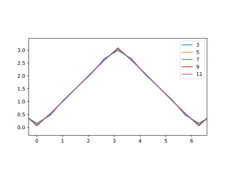

第8回： ▶︎ 総和・数値積分
▶︎ 級数和の公式（繰り返しで加算)
自然数の級数和の結果がいくつか知られている。 これらのグラフを描いて、結果を確認しよう。
using PyPlot
nmax=25
xs1=0:0.2:nmax
plot(xs1, xs1.*(xs1+1)/2, label="sum i", "b")
ns=0:nmax
for n in ns
s1=0.0
for i in 1:n
s1 += i
end
plot(n,s1, "bo")
end
xlabel("n")
ylabel("sum i up to n")using PyPlot
nmax=25
xs1=0:0.2:nmax
plot(xs1, xs1.*(xs1+1).*(2*xs1+1)/6, "b")
ns=0:nmax
for n in ns
s=0.0
for i in 1:n
s += i^2
end
plot(n,s, "bo")
end
xlabel("n")
ylabel("sum i^2 up to n")■ ベクトルのインデックス
参考 → ■ ベクトル
ベクトル a の寸法は、関数 length(a) で得られる。
julia> v=[11,21,31,41,51]
5-element Array{Int64,1}:
11
21
31
41
51
julia> length(v)
5ベクトル a 、整数 i に対して a[i] と書くと、 ベクトル aの i番目の要素の値が得られる。 要素の番号 (インデックス, indexという) iは 1から数える。 end というインデックスは、ベクトルの最後の要素を指す。
存在しないインデックスを指定すると、例外が発生する。
julia> v[1]
11
julia> v[2]
21
julia> v[end] # 末尾の要素
51
julia> v[end-1] # 末尾の一つ前の要素
41
julia> v[0] # => ERROR: BoundsError
ERROR: BoundsError: attempt to access 5-element Array{Int64,1} at index [0]インデックスとして、整数 iの代わりに、Range(範囲)を指定すると、 その範囲のインデックスを持つベクトルが得られる。 (参考 ■ Range型 )
julia> v[2:3]
2-element Array{Int64,1}:
21
31
julia> v[1:end-1] # 最初から、末尾の一つ前の要素
4-element Array{Int64,1}:
11
21
31
41
julia> v[4:6] # => ERROR: BoundsError
ERROR: BoundsError: attempt to access 5-element Array{Int64,1} at index [4:6]■ ベクトルの生成
ベクトルを作る方法は、いくつかある。
これまでに、以下の方法を紹介した。
■ 要素が 0のベクトルを作る
関数 zerosは、要素が零 $0$ のベクトルを作る。
関数
zeros(n)は、要素の型が浮動小数点で、寸法nのベクトルを作る。関数
zeros(T, n)は、要素の型がTで、寸法nのベクトルを作る。ベクトル
vに対して、関数zeros(v)は、寸法がベクトルvと同じで、要素の型がベクトルvの要素と同じベクトルを作る。
julia> zeros(5) # 要素は浮動小数点
5-element Array{Float64,1}:
0.0
0.0
0.0
0.0
0.0
julia> zeros(Float64,5) # 上と同じ
5-element Array{Float64,1}:
0.0
0.0
0.0
0.0
0.0
julia> zeros(Int64,5) # 要素は整数
5-element Array{Int64,1}:
0
0
0
0
0
julia> zeros(v)
5-element Array{Int64,1}:
0
0
0
0
0■ 要素が 1 のベクトルを作る
関数 onesは、要素が 1 のベクトルを作る。 呼び出し方は、関数 zeros() と同じである。
julia> ones(5) # 要素は浮動小数点
5-element Array{Float64,1}:
1.0
1.0
1.0
1.0
1.0
julia> ones(Float64,5) # 上と同じ
5-element Array{Float64,1}:
1.0
1.0
1.0
1.0
1.0
julia> ones(Int64,5) # 要素は整数
5-element Array{Int64,1}:
1
1
1
1
1
julia> ones(v)
5-element Array{Int64,1}:
1
1
1
1
1■ 疑似乱数を要素とするベクトルを作る
julia> rand(10) # => 10-elements
10-element Array{Float64,1}:
0.828247
0.676589
0.692472
0.928317
0.395314
0.95201
0.00367236
0.797087
0.954481
0.363686
julia> rand([1,2,3], 10) # [1,2,3]からランダムに10個選ぶ
10-element Array{Int64,1}:
2
1
1
2
3
3
3
1
3
1ヒストグラムを描く。分割数 10
using PyPlot
xs=rand(1000)
plt[:hist](xs, bins=10)
xlim(-0.2,1.2)■ 正規乱数を要素とするベクトルを作る
平均 $0$、標準偏差 $1$ の正規分布の疑似乱数を作る
julia> randn(10) # => 10-elements
10-element Array{Float64,1}:
-0.00783609
1.29834
-1.53442
-0.591767
0.872479
-0.601668
-0.918482
-0.730986
0.98454
-0.706098ヒストグラムを描く。分割数 50
using PyPlot
xs=randn(1000)
plt[:hist](xs, bins=50)
xlim(-4,4)■ 内包表記
julia> [ x^2 for x in 0:10 ]
11-element Array{Int64,1}:
0
1
4
9
16
25
36
49
64
81
100
julia> [ x^2 for x in [-3,0,2] ]
3-element Array{Int64,1}:
9
0
4
julia> [ x^2 for x in -10:2:10 if rem(x,3) != 2 ]
9-element Array{Int64,1}:
100
64
36
16
4
0
16
36
100▶︎ フーリエ級数の和（繰り返しで加算)
周期波形 $f(t+T) = f(t)$ は、 以下のように、三角関数の級数和として表される。 ここで、$a_0, a_1, \cdots$, $b_1, b_2, \cdots$ は実数の定数である。 これを、実フーリエ級数和という。
ここで $\omega$ は基本周波数である。
以下の例では、既に知られているフーリエ級数和から、元の関数が近似される様子を観察するのに留める。
▶︎ 方形波：フーリエ級数の有限和
方形波は、 ▶ 方形波を描く で紹介した。
基本周波数 $\omega=1$、数 $-1$と$1$とを往復する方形波を描こう。
using PyPlot
ts=-3pi:pi/36:3pi
plot(ts, sign.(sin.(ts)) )
yticks( [-1,0,1], [ "-1", "0", "1"])
xticks( [-3pi,-2pi,-pi,0, pi,2pi,3pi],
[L"-3\pi", L"-2\pi", L"-\pi","0", L"\pi", L"2\pi", L"3\pi"])この方形波のフーリエ級数和は、以下のように与えられる。
この式の $\sin t$, $\sin 3t$, $\sin 5t$ の３つを加えると、方形波に近くなることを観察する。
using PyPlot
ts=-3pi:pi/36:3pi
ys=sin.(ts)*4/pi
plot(ts, ys, label="n=1")
yticks( [-1,0,1], [ "-1", "0", "1"])
xticks( [-3pi,-2pi,-pi,0, pi,2pi,3pi],
[L"-3\pi", L"-2\pi", L"-\pi","0", L"\pi", L"2\pi", L"3\pi"])
ys += sin.(3ts)/3*4/pi
plot(ts, ys, label="n=1,3")
ys += sin.(5ts)/5*4/pi
plot(ts, ys, label="n=1,3,5")
legend()今度は $\sin 13t$ まで加えた結果を観察しよう。
using PyPlot
ts=-3pi:pi/36:3pi
n=13
ys=zeros(ts)
for i in 1:2:n
ys += sin.(i*ts)/i*4/pi
end
plot(ts, ys)
plot(ts, sign.(sin.(ts)), label="up to"*string(n) )
yticks( [-1,0,1], [ "-1", "0", "1"])
xticks( [-3pi,-2pi,-pi,0, pi,2pi,3pi],
[L"-3\pi", L"-2\pi", L"-\pi","0", L"\pi", L"2\pi", L"3\pi"])上のフーリエ級数和が方形波を近似すると説明したが、なめらかな三角関数の級数和をいくら加えていっても、なめらかでない方形波に一致することはない。級数和が元の関数に近づくのは「各点収束」ではなく「一様収束」に相当する。
▶︎ 三角波：フーリエ級数の有限和
一定の正の傾きで増加、一定の負の傾きで減少を繰り返す周期関数を、 三角波 (triangular wave)という。
傾き $1$ と $-1$で、周期 $2\pi$ の三角波を描こう。 この関数は、 絶対値関数 abs (参考: ▶︎ 絶対値関数 )と 関数 mod2pi (参考: ▶ 2piで割った剰余 ) とを組み合わせて定義できる。 参考→ ■ 関数の定義 (代入文形式)
triangular(t)=pi-abs.(mod2pi.(t)-pi)
using PyPlot
ts=-3.5pi:pi/6:3.5pi
plot(ts, triangular.(ts) )
xlim(-pi*2.5,pi*2.5)
ylim(-pi*0.1,pi*1.1)
plt[:axes]()[:set_aspect]("equal")上の三角波のフーリエ級数展開は、以下の通りである。
using PyPlot
ys=ones(ts)*(pi/2)
for n=1:2:5
ys -= cos.(n*ts)*(4/pi/n^2)
end
plot(ts, ys, "o")
plot(ts,triangular.(ts))
ylim(-pi*0.1,pi*1.1)
plt[:axes]()[:set_aspect]("equal")勾配が不連続に変化する点(キンク, kink)を拡大して描画しよう。
using PyPlot
for nmax=3:2:11
ys=ones(ts)*(pi/2)
for n=1:2:nmax
ys -= cos.(n*ts)*(4/n^2/pi)
end
plot(ts, ys, label=nmax)
end
xlim(-pi*0.1,pi*2.1)
ylim(-pi*0.1,pi*1.1)
plt[:axes]()[:set_aspect]("equal")
legend()
using PyPlot
for j=1:6
nmax=1+2*j
ys=ones(ts)*(pi/2)
for n=1:2:nmax
ys -= cos.(n*ts)*(4/n^2/pi)
end
ax=plt[:subplot](610+j)
ax[:plot](ts,triangular.(ts))
ax[:plot](ts, ys, "o")
ax[:set_ylim](-pi*0.1,pi*1.1)
end◀ 練習：フーリエ級数の有限和
次の級数和で表される曲線を描け。
▶︎ 数値積分
定積分の近似値を、級数和として求めることができる(数値積分)。
以下では、連続関数の、有限な区間に対する定積分の近似値を求めてみる。 参考→ ▶︎ 関数が連続とは
例として、関数 $g(x)$
を、$x=0$ から $1$の範囲で積分しよう。
関数 $g(x)$は、この範囲で単調減少である。
using PyPlot
xmin=0
xmax=1
m=6
n=2^m
xs=linspace(xmin,xmax,n+1)
g(x)=1/(1+x)
plot(xs, g.(xs), "b")
ylim(0,1.2)定積分の値は、
である。
▶︎ Riemann和（繰り返しで加算)
積分すべき関数を、等間隔の短冊に区切り、短冊の面積の総和をとろう。
短冊の幅を $d$とすると、
という、総和 (Riemann和)をとることになる。
以下のグラフは、8枚の短冊に分けた様子を示す。 ここで、短冊の高さは、各短冊の左端の関数の値をとった。
using PyPlot
xmin=0
xmax=1
m=3
n=2^m
xs=linspace(xmin,xmax,n+1) # n個の短冊に分割する
d=(xmax-xmin)/n # 短冊の刻み
g(x)=1/(1+x)
plot(xs, g.(xs), "b")
ylim(0,1.2)
for x in xs[1:end-1]
plot([x, x, x+d, x+d], [0, g(x), g(x), 0], "k", lw=0.5)
endWARNING: Method definition g(Any) in module ex-ch08_rie1 at none:1 overwritten at none:1.
では、短冊を $2^4 = 16$ 枚に分けて、短冊の面積の総和をとろう。
se=log(2)
m=4
n=2^m
xs=linspace(xmin,xmax,n+1)
d=(xmax-xmin)/n
s1=0
for i in 1:n
x=xs[i]
s1 += g(x)*d
end
@show s1
@show se
# 相対誤差
@show (s1-se)/se;s1 = 0.7090162022075267
se = 0.6931471805599453
(s1 - se) / se = 0.02289415883472531816分割でも、相対誤差 $2.3%$ を達成した。
分割数を増やせば、この和は、正しい定積分の値に近づいていくであろう。
分割数を $2^m$ で増やして、絶対誤差を描こう。 横軸の分割数は、対数で示した。
using PyPlot
se=log(2)
for m in 0:12
n=2^m
xs=linspace(xmin,xmax,n+1)
d=(xmax-xmin)/n
s1=0
for i in 1:n
x=xs[i]
s1 += g(x)*d
end
plot(n, abs(s1 - se) , ".", color="b")
end
xscale("log")
xlabel("n")
ylabel("absolute error")今度は、相対誤差を、両対数グラフで描く。
using PyPlot
for m in 0:12
n=2^m
xs=linspace(xmin,xmax,n+1)
d=(xmax-xmin)/n
s1=0
for i in 1:n
x=xs[i]
s1 += g(x)*d
end
plot(n, abs(s1 - se) / se, ".", color="g")
end
xlabel("n")
ylabel("relative error (absolute value)")
xscale("log")
yscale("log")■ 総和関数 sum
関数 sum(xs) は、数のコレクション $v$ を引数にとり、$v$ の全ての要素の総和を求める。
julia> sum([1,2,3,4,5])
15
julia> sum(1:5)
15▶︎ 級数和の公式（関数 sumを用いる)
using PyPlot
nmax=25
xs1=0:0.2:nmax
plot(xs1, xs1.*(xs1+1)/2, label="sum i", "b")
ns=0:nmax
for n in ns
xs=1:n
s1=sum(xs)
plot(n,s1, "bo")
end
xlabel("n")
ylabel("sum i up to n")using PyPlot
nmax=25
xs1=0:0.2:nmax
plot(xs1, xs1.*(xs1+1).*(2*xs1+1)/6, "b")
ns=0:nmax
for n in ns
# 各要素を二乗
xs=(1:n).^2
s=sum(xs)
plot(n,s, "bo")
end
xlabel("n")
ylabel("sum i^2 up to n")▶︎ Riemann和（関数 sumを用いる)
Riemann和において、 刻み幅 $d$ は全ての短冊に共通であるから、$d$ をくくりだして
のようにまとめることができる。すなわち、関数の値の和 $\sum_{i=1}^{n} g( x_{i})$ をとってから $d$倍すればよい。関数の値の和を取るのに、関数 sum を使うことができる。
下のプログラムで g.(xs[1:end-1]) は、ベクトル xs[1:end-1] の各要素に関数 g() を適用したベクトルである。
ループで和を計算した場合と、関数 sum を用いる場合との両方で、 相対誤差をプロットする。 計算結果が一致していることが見える。 (参考: 結果が一致することを確かめるグラフの描画 → ▼▶︎ 周期関数を確認する
using PyPlot
se=log(2)
for m in 0:12
n=2^m
xs=linspace(xmin,xmax,n+1)
d=(xmax-xmin)/n
# 和を取る
s1=0
for i in 1:n
x=xs[i]
s1 += g(x)*d
end
plot(n, abs(s1 - se)/se , "ro", color="b")
# sum を使う
s2=sum( g.(xs[1:end-1]))*d
plot(n, abs(s2 - se)/se , "b.", color="r")
end
xscale("log")
yscale("log")
xlabel("n")
ylabel("absolute error")▶︎ 台形則（関数 sumを用いる)
今度は、短冊を台形として計算してみる。
using PyPlot
m=2
n=2^m
xmin=0
xmax=1
xs=linspace(xmin,xmax,n+1)
d=(xmax-xmin)/n
g(x)=1/(1+x)
plot(xs, g.(xs), "b")
ylim(0,1.2)
for i in 1:n
x=xs[i]
plot([x, x, x+d, x+d], [0, g(x), g(x+d), 0], "k", lw=0.5)
end総和をとるとき、隣り合う台形の面積をまとめることができることに注目しよう。
先の Riemann和と台形則の値を両方計算してみよう。
se=log(2)
# Riemann和
s1=0
for x in xs[1:end-1]
s1 += g(x)*d
end
# 台形則
st=(g(xs[1])+g(xs[end]))/2
for i in 2:n
x=xs[i]
st += g(x)
end
st *= d
@show s1
@show st
# 相対誤差
@show (s1-se)/se;
@show (st-se)/se;s1 = 0.7595238095238095
st = 0.6970238095238095
(s1 - se) / se = 0.09576123343709363
(st - se) / se = 0.005592793381533408関数 sumを使って簡潔に書こう。
se=log(2)
m=4
n=2^m
xs=linspace(xmin,xmax,n+1)
d=(xmax-xmin)/n
s1=sum( g.(xs[1:end-1]))*d
st=(g(xs[1])+g(xs[end]))/2
st += sum( g.(xs[2:end-1]))
st *= d
@show s1;
@show st;
# 相対誤差
@show (s1-se)/se;
@show (st-se)/se;s1 = 0.7090162022075268
st = 0.6933912022075267
(s1 - se) / se = 0.022894158834725477
(st - se) / se = 0.0003520488208352633相対誤差を描く。
using PyPlot
se=log(2)
for m in 0:12
n=2^m
xs=linspace(xmin,xmax,n+1)
d=(xmax-xmin)/n
s1=sum( g.(xs[1:end-1]))*d
st=(g(xs[1])+g(xs[end]))/2
st += sum( g.(xs[2:end-1]))
st *= d
plot(n, abs(s1 - se) / se, ".", color="g")
plot(n, abs(st - se) / se , ".", color="r")
end
xlabel("n")
ylabel("relative error (absolute value)")
xscale("log")
yscale("log")◀ 練習：Riemann和・台形則
以下の定積分の近似値を、Riemann和と台形則でそれぞれ評価してみよ。 (注記されていない)定積分の理論値は各自計算せよ。
■ 繰返し内部からの脱出
for文の繰り返し (forブロック)の内部で、break 文を使うと、現在繰り返し中のループから直ちに抜けることができる。
julia> for i = 1:1000
println(i)
if i >= 5
break
end
end
1
2
3
4
5乱数の値が $0.8$ を超えるまで繰り返す。
for i in 1:10
r=rand()
println(r)
if r > 0.8
break
end
end0.5182085807562404
0.5736030711607178
0.849347851605549二重ループ、内側のループからの脱出
julia> for j in 1:3
for i in 1:5
println("i="*string(i)*" j="*string(j))
if i >= 3
break
end
end
end
i=1 j=1
i=2 j=1
i=3 j=1
i=1 j=2
i=2 j=2
i=3 j=2
i=1 j=3
i=2 j=3
i=3 j=3一つのfor文に二つの繰り返しを書いた場合、breakで for文全体から抜けてしまう。
julia> for j in 1:3, i in 1:5
println("i="*string(i)*" j="*string(j))
if i >= 3
break
end
end
i=1 j=1
i=2 j=1
i=3 j=1forブロックの内部で、continue 文を使うと、次の繰り返しに直ちに移動できる。 以下で、i % 3 は rem(i,3) と同じである。 参考→ ■ 残余 rem と整商 div
julia> for i = 1:10
if i % 3 != 0
continue
end
println(i)
end
3
6
9◀▼ 練習： 条件が成り立つまで繰り返す：数値積分
(少し難しいので、後回しにしてもよい)
分割数 $n$を $2^{20}$まで、2の冪乗で増やしていけ、 ただし、相対誤差が $10^{-4}$ 以下になったら、そこで終了せよ。
▶︎ Riemann和（関数 sumを用いる) 、または、 ▶︎ 台形則（関数 sumを用いる) の、どちらを用いてもよい。
今回のまとめ
ベクトルのインデックス
要素が
0または1のベクトルの生成ベクトルの総和
sum級数和
フーリエ級数の和
数値積分：Riemann和
数値積分：台形則
繰返し内部からの脱出